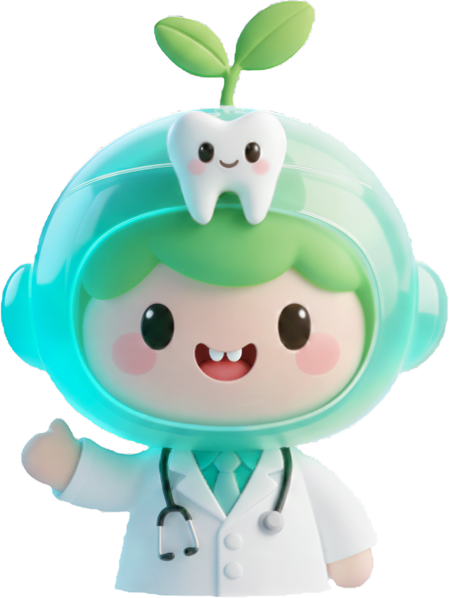

ToothHelper
智能口腔健康系统
基于深度学习的计算机视觉技术（DuYa Model），1分钟内快速完成全口健康状况分析。请按照标准上传3张牙齿照片以启动分析。

您好！我是您的
智能口腔助手
ToothHelper已为 99,888 名用户提供口腔健康指导
您好！我是您的
智能口腔助手
ToothHelper已为 99,888 名用户提供了口腔健康指导
上颌面视角
正面牙列视角
下颌面视角
免责声明：本系统提供的口腔健康分析仅供参考，不能替代专业医生的诊断和治疗建议。如有口腔问题，请及时就医咨询专业口腔医生。本系统分析结果的准确性受拍摄质量、光线条件等多种因素影响，使用者应理性看待分析结果。
智能检测进行中
免责声明：本系统提供的口腔健康分析仅供参考，不能替代专业医生的诊断和治疗建议。如有口腔问题，请及时就医咨询专业口腔医生。本系统分析结果的准确性受拍摄质量、光线条件等多种因素影响，使用者应理性看待分析结果。